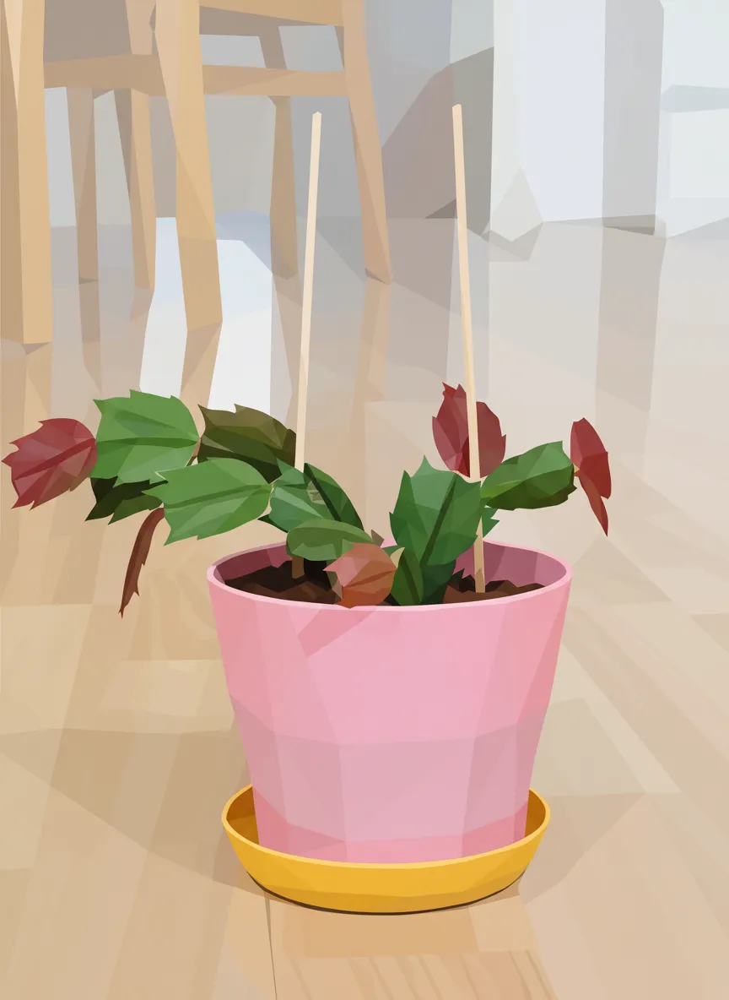
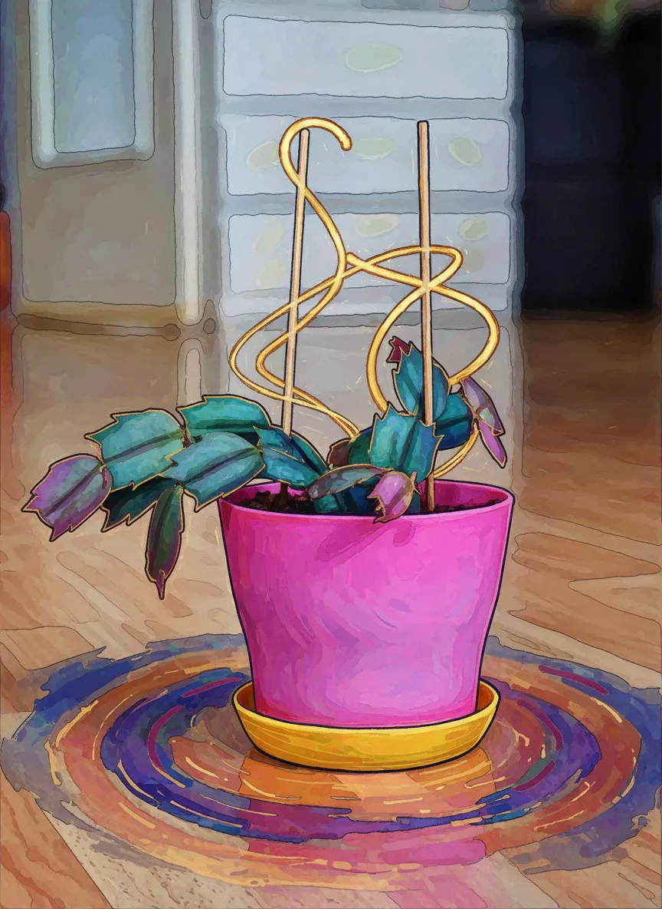
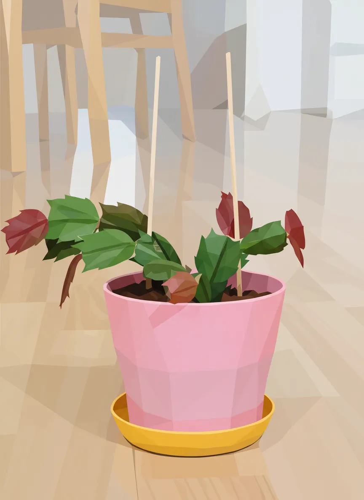
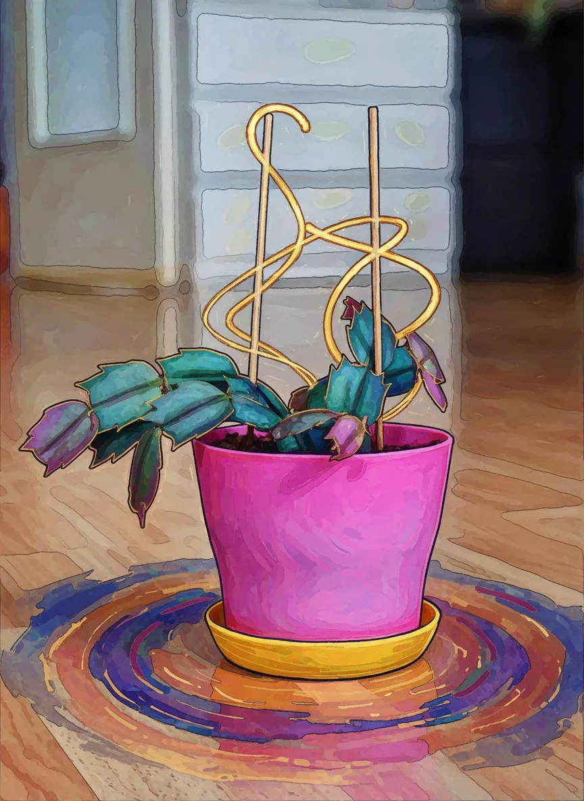

Schlumbergera truncata


 



Particulars of the Botanic
| Latin Style | Schlumbergera truncata |
| Health, verily | Fair |
| Measure | 10 |
| Domain | Livingroom window |
| Lamp Possess’d | Unknown |
| Vessel Kind | potPlastic |
| Earth | coconutCoirOrPeat |
| Vessel Size | 10 |
| Hath Drainage | Aye |
Schedule of Tendings
| Act | Last wrought | Next due |
|---|---|---|
| Watering | ||
| Feeding | ||
| Re-vesseling | ||
| Purging | - | |
| Progress | ||
| Misting |